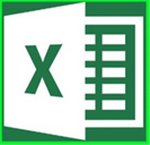

Vorteile KI-gestützter Programmierung gegenüber Low-Code/No-Code





- Eine Lösung - kein Tool-Wirrwarr
- Individuell anpassbar statt Plattform-Vorgaben
- Weniger Vendor-Lockin: Code gehört den Anwendern
- Programmieren mit KI-Unterstützung ist schneller als Klicken und Konfigurieren
- Code lässt sich versionieren und gemeinschaftlich entwickeln
- Code lässt sich leichter verwalten
- Code lässt sich leichter wiederverwenden und modfizieren